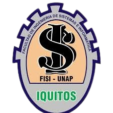

UNIVERSIDAD NACIONAL DE LA AMAZONIA PERUANA
Facultad de Ingeniería de Sistemas e Informática
APELLIDOS Y NOMBRES: CARDENAS GONZALES JHONATTAN JHORDANO
FACULTAD: INFORMATICA II
DOCENTE: PITA ASTENGO LUIS HONORATO
TEMA: PERU GOURMET RESTAURANT
CICLO: II